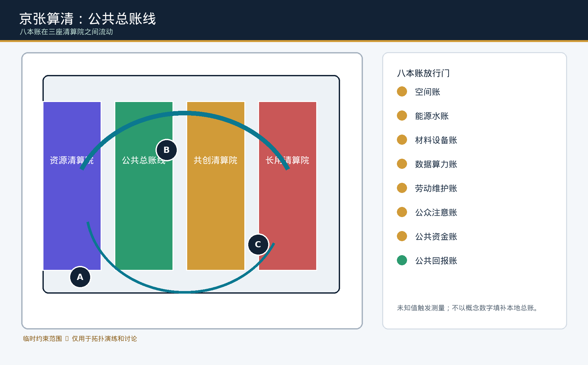
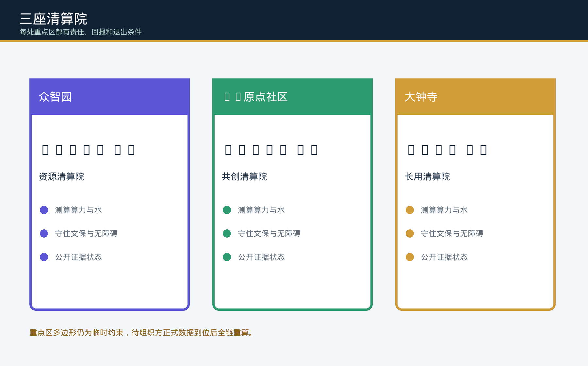

证据图件
三层范围 · 用地分区 · 重点区域 · 交通慢行 · 蓝绿公共空间 · 建筑 · 更新项目 · AI 场景 · 核心指标 · 任务覆盖 · 自检状态 · 来源 · 假设





核心指标
site_area_sqm11412825.386
green_ratio0.132
public_space_ratio0.054
key_area_count3.000
三座清算院
众智园 · 资源清算院AI原点 · 共创清算院大钟寺 · 长用清算院京张公共总账线
限制与下一触发
组织方尚未提供正式 polygon、法定控规、权属、文保、市政、能源和劳动基线。正式数据到位后，必须替换临时几何并重算全部空间账分母、图件、HTML、PDF 与哈希。